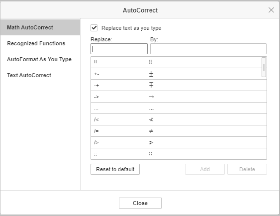
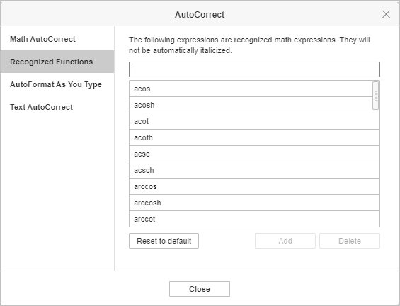
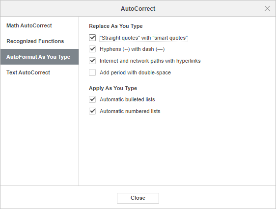
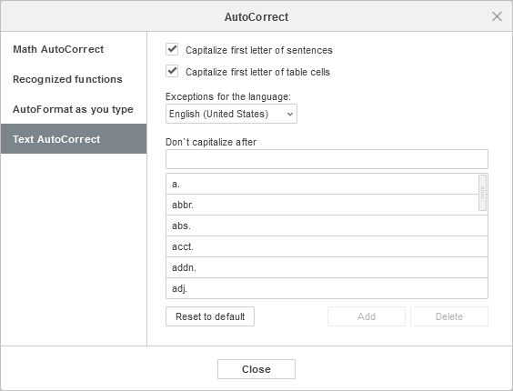

Funkcije automatske ispravke
Funkcije automatske ispravke u ONLYOFFICE Presentation Editor-u koriste se za automatsko formatiranje teksta kada se prepozna određeni obrazac ili za ubacivanje posebnih matematičkih simbola prepoznavanjem određenih kombinacija znakova.
Dostupne opcije automatske ispravke navedene su u odgovarajućem dijaloškom prozoru. Da biste mu pristupili, idite na karticu File -> Advanced Settings -> Proofing -> AutoCorrect Options.
Dijaloški prozor AutoCorrect sastoji se od četiri kartice: Math AutoCorrect, Recognized Functions, AutoFormat As You Type i Text AutoCorrect.
Math AutoCorrect
Prilikom rada sa jednačinama, možete ubaciti veliki broj simbola, akcenata i znakova matematičkih operacija tako što ih kucate na tastaturi umesto da birate šablon iz galerije.
U editoru jednačina postavite kursor u odgovarajući placeholder, unesite kod za matematičku automatsku ispravku, a zatim pritisnite Spacebar. Uneti kod biće pretvoren u odgovarajući simbol, a razmak će biti uklonjen.
Kodovi razlikuju velika i mala slova.
Možete dodavati, menjati, vraćati i uklanjati stavke automatske ispravke sa liste AutoCorrect. Idite na karticu File -> Advanced Settings -> Proofing -> AutoCorrect Options -> Math AutoCorrect.
Dodavanje stavke na listu AutoCorrect
- Unesite kod automatske ispravke koji želite da koristite u polje Replace.
- Unesite simbol koji će biti dodeljen unetom kodu u polje By.
- Kliknite na dugme Add.
Izmena stavke na listi AutoCorrect
- Izaberite stavku koju želite da izmenite.
- Možete promeniti informacije u oba polja: kod u polju Replace ili simbol u polju By.
- Kliknite na dugme Replace.
Uklanjanje stavki sa liste AutoCorrect
- Izaberite stavku koju želite da uklonite sa liste.
- Kliknite na dugme Delete.
Da biste vratili prethodno obrisane stavke, izaberite stavku sa liste i kliknite na dugme Restore.
Koristite dugme Reset to default da biste vratili podrazumevana podešavanja. Sve stavke automatske ispravke koje ste dodali biće uklonjene, a izmenjene stavke biće vraćene na svoje originalne vrednosti.
Da biste onemogućili Math AutoCorrect i sprečili automatske izmene i zamene, uklonite oznaku iz polja Replace text as you type.

Tabela ispod sadrži sve trenutno podržane kodove dostupne u Presentation Editor-u. Potpuna lista podržanih kodova takođe se može pronaći na kartici File u odeljku Advanced Settings... -> Spell checking -> Proofing.
Podržani kodovi
| Kod | Simbol | Kategorija |
| !! | Simboli | |
| ... | Tačke | |
| :: | Operatori | |
| := | Operatori | |
| /< | Relacioni operatori | |
| /> | Relacioni operatori | |
| /= | Relacioni operatori | |
| \above | Skripte iznad/ispod | |
| \acute | Akcenti | |
| \aleph | Hebrejska slova | |
| \alpha | Grčka slova | |
| \Alpha | Grčka slova | |
| \amalg | Binarni operatori | |
| \angle | Geometrijska notacija | |
| \aoint | Integrali | |
| \approx | Relacioni operatori | |
| \asmash | Strelice | |
| \ast | Binarni operatori | |
| \asymp | Relacioni operatori | |
| \atop | Operatori | |
| \bar | Nadcrta/Potcrta | |
| \Bar | Akcenti | |
| \because | Relacioni operatori | |
| \begin | Graničnici | |
| \below | Skripte iznad/ispod | |
| \bet | Hebrejska slova | |
| \beta | Grčka slova | |
| \Beta | Grčka slova | |
| \beth | Hebrejska slova | |
| \bigcap | Veliki operatori | |
| \bigcup | Veliki operatori | |
| \bigodot | Veliki operatori | |
| \bigoplus | Veliki operatori | |
| \bigotimes | Veliki operatori | |
| \bigsqcup | Veliki operatori | |
| \biguplus | Veliki operatori | |
| \bigvee | Veliki operatori | |
| \bigwedge | Veliki operatori | |
| \binomial | Jednačine | |
| \bot | Logička notacija | |
| \bowtie | Relacioni operatori | |
| \box | Simboli | |
| \boxdot | Binarni operatori | |
| \boxminus | Binarni operatori | |
| \boxplus | Binarni operatori | |
| \bra | Graničnici | |
| \break | Simboli | |
| \breve | Akcenti | |
| \bullet | Binarni operatori | |
| \cap | Binarni operatori | |
| \cbrt | Kvadratni koreni i radikali | |
| \cases | Simboli | |
| \cdot | Binarni operatori | |
| \cdots | Tačke | |
| \check | Akcenti | |
| \chi | Grčka slova | |
| \Chi | Grčka slova | |
| \circ | Binarni operatori | |
| \close | Graničnici | |
| \clubsuit | Simboli | |
| \coint | Integrali | |
| \cong | Relacioni operatori | |
| \coprod | Matematički operatori | |
| \cup | Binarni operatori | |
| \dalet | Hebrejska slova | |
| \daleth | Hebrejska slova | |
| \dashv | Relacioni operatori | |
| \dd | Dvostruko stilizovana slova | |
| \Dd | Dvostruko stilizovana slova | |
| \ddddot | Akcenti | |
| \dddot | Akcenti | |
| \ddot | Akcenti | |
| \ddots | Tačke | |
| \defeq | Relacioni operatori | |
| \degc | Simboli | |
| \degf | Simboli | |
| \degree | Simboli | |
| \delta | Grčka slova | |
| \Delta | Grčka slova | |
| \Deltaeq | Operatori | |
| \diamond | Binarni operatori | |
| \diamondsuit | Simboli | |
| \div | Binarni operatori | |
| \dot | Akcenti | |
| \doteq | Relacioni operatori | |
| \dots | Tačke | |
| \doublea | Dvostruko stilizovana slova | |
| \doubleA | Dvostruko stilizovana slova | |
| \doubleb | Dvostruko stilizovana slova | |
| \doubleB | Dvostruko stilizovana slova | |
| \doublec | Dvostruko stilizovana slova | |
| \doubleC | Dvostruko stilizovana slova | |
| \doubled | Dvostruko stilizovana slova | |
| \doubleD | Dvostruko stilizovana slova | |
| \doublee | Dvostruko stilizovana slova | |
| \doubleE | Dvostruko stilizovana slova | |
| \doublef | Dvostruko stilizovana slova | |
| \doubleF | Dvostruko stilizovana slova | |
| \doubleg | Dvostruko stilizovana slova | |
| \doubleG | Dvostruko stilizovana slova | |
| \doubleh | Dvostruko stilizovana slova | |
| \doubleH | Dvostruko stilizovana slova | |
| \doublei | Dvostruko stilizovana slova | |
| \doubleI | Dvostruko stilizovana slova | |
| \doublej | Dvostruko stilizovana slova | |
| \doubleJ | Dvostruko stilizovana slova | |
| \doublek | Dvostruko stilizovana slova | |
| \doubleK | Dvostruko stilizovana slova | |
| \doublel | Dvostruko stilizovana slova | |
| \doubleL | Dvostruko stilizovana slova | |
| \doublem | Dvostruko stilizovana slova | |
| \doubleM | Dvostruko stilizovana slova | |
| \doublen | Dvostruko stilizovana slova | |
| \doubleN | Dvostruko stilizovana slova | |
| \doubleo | Dvostruko stilizovana slova | |
| \doubleO | Dvostruko stilizovana slova | |
| \doublep | Dvostruko stilizovana slova | |
| \doubleP | Dvostruko stilizovana slova | |
| \doubleq | Dvostruko stilizovana slova | |
| \doubleQ | Dvostruko stilizovana slova | |
| \doubler | Dvostruko stilizovana slova | |
| \doubleR | Dvostruko stilizovana slova | |
| \doubles | Dvostruko stilizovana slova | |
| \doubleS | Dvostruko stilizovana slova | |
| \doublet | Dvostruko stilizovana slova | |
| \doubleT | Dvostruko stilizovana slova | |
| \doubleu | Dvostruko stilizovana slova | |
| \doubleU | Dvostruko stilizovana slova | |
| \doublev | Dvostruko stilizovana slova | |
| \doubleV | Dvostruko stilizovana slova | |
| \doublew | Dvostruko stilizovana slova | |
| \doubleW | Dvostruko stilizovana slova | |
| \doublex | Dvostruko stilizovana slova | |
| \doubleX | Dvostruko stilizovana slova | |
| \doubley | Dvostruko stilizovana slova | |
| \doubleY | Dvostruko stilizovana slova | |
| \doublez | Dvostruko stilizovana slova | |
| \doubleZ | Dvostruko stilizovana slova | |
| \downarrow | Strelice | |
| \Downarrow | Strelice | |
| \dsmash | Strelice | |
| \ee | Dvostruko stilizovana slova | |
| \ell | Simboli | |
| \emptyset | Notacije skupova | |
| \emsp | Razmaci | |
| \end | Graničnici | |
| \ensp | Razmaci | |
| \epsilon | Grčka slova | |
| \Epsilon | Grčka slova | |
| \eqarray | Simboli | |
| \equiv | Relacioni operatori | |
| \eta | Grčka slova | |
| \Eta | Grčka slova | |
| \exists | Logičke notacije | |
| \forall | Logičke notacije | |
| \fraktura | Fraktur slova | |
| \frakturA | Fraktur slova | |
| \frakturb | Fraktur slova | |
| \frakturB | Fraktur slova | |
| \frakturc | Fraktur slova | |
| \frakturC | Fraktur slova | |
| \frakturd | Fraktur slova | |
| \frakturD | Fraktur slova | |
| \frakture | Fraktur slova | |
| \frakturE | Fraktur slova | |
| \frakturf | Fraktur slova | |
| \frakturF | Fraktur slova | |
| \frakturg | Fraktur slova | |
| \frakturG | Fraktur slova | |
| \frakturh | Fraktur slova | |
| \frakturH | Fraktur slova | |
| \frakturi | Fraktur slova | |
| \frakturI | Fraktur slova | |
| \frakturk | Fraktur slova | |
| \frakturK | Fraktur slova | |
| \frakturl | Fraktur slova | |
| \frakturL | Fraktur slova | |
| \frakturm | Fraktur slova | |
| \frakturM | Fraktur slova | |
| \frakturn | Fraktur slova | |
| \frakturN | Fraktur slova | |
| \frakturo | Fraktur slova | |
| \frakturO | Fraktur slova | |
| \frakturp | Fraktur slova | |
| \frakturP | Fraktur slova | |
| \frakturq | Fraktur slova | |
| \frakturQ | Fraktur slova | |
| \frakturr | Fraktur slova | |
| \frakturR | Fraktur slova | |
| \frakturs | Fraktur slova | |
| \frakturS | Fraktur slova | |
| \frakturt | Fraktur slova | |
| \frakturT | Fraktur slova | |
| \frakturu | Fraktur slova | |
| \frakturU | Fraktur slova | |
| \frakturv | Fraktur slova | |
| \frakturV | Fraktur slova | |
| \frakturw | Fraktur slova | |
| \frakturW | Fraktur slova | |
| \frakturx | Fraktur slova | |
| \frakturX | Fraktur slova | |
| \fraktury | Fraktur slova | |
| \frakturY | Fraktur slova | |
| \frakturz | Fraktur slova | |
| \frakturZ | Fraktur slova | |
| \frown | Relacioni operatori | |
| \funcapply | Binarni operatori | |
| \G | Grčka slova | |
| \gamma | Grčka slova | |
| \Gamma | Grčka slova | |
| \ge | Relacioni operatori | |
| \geq | Relacioni operatori | |
| \gets | Strelice | |
| \gg | Relacioni operatori | |
| \gimel | Hebrejska slova | |
| \grave | Akcenti | |
| \hairsp | Razmaci | |
| \hat | Akcenti | |
| \hbar | Simboli | |
| \heartsuit | Simboli | |
| \hookleftarrow | Strelice | |
| \hookrightarrow | Strelice | |
| \hphantom | Strelice | |
| \hsmash | Strelice | |
| \hvec | Akcenti | |
| \identitymatrix | Matrice | |
| \ii | Dvostruko stilizovana slova | |
| \iiint | Integrali | |
| \iint | Integrali | |
| \iiiint | Integrali | |
| \Im | Simboli | |
| \imath | Simboli | |
| \in | Relacioni operatori | |
| \inc | Simboli | |
| \infty | Simboli | |
| \int | Integrali | |
| \integral | Integrali | |
| \iota | Grčka slova | |
| \Iota | Grčka slova | |
| \itimes | Matematički operatori | |
| \j | Simboli | |
| \jj | Dvostruko stilizovana slova | |
| \jmath | Simboli | |
| \kappa | Grčka slova | |
| \Kappa | Grčka slova | |
| \ket | Graničnici | |
| \lambda | Grčka slova | |
| \Lambda | Grčka slova | |
| \langle | Graničnici | |
| \lbbrack | Graničnici | |
| \lbrace | Graničnici | |
| \lbrack | Graničnici | |
| \lceil | Graničnici | |
| \ldiv | Razlomne kose crte | |
| \ldivide | Razlomne kose crte | |
| \ldots | Tačke | |
| \le | Relacioni operatori | |
| \left | Graničnici | |
| \leftarrow | Strelice | |
| \Leftarrow | Strelice | |
| \leftharpoondown | Strelice | |
| \leftharpoonup | Strelice | |
| \leftrightarrow | Strelice | |
| \Leftrightarrow | Strelice | |
| \leq | Relacioni operatori | |
| \lfloor | Graničnici | |
| \lhvec | Akcenti | |
| \limit | Granice | |
| \ll | Relacioni operatori | |
| \lmoust | Graničnici | |
| \Longleftarrow | Strelice | |
| \Longleftrightarrow | Strelice | |
| \Longrightarrow | Strelice | |
| \lrhar | Strelice | |
| \lvec | Akcenti | |
| \mapsto | Strelice | |
| \matrix | Matrice | |
| \medsp | Razmaci | |
| \mid | Relacioni operatori | |
| \middle | Simboli | |
| \models | Relacioni operatori | |
| \mp | Binarni operatori | |
| \mu | Grčka slova | |
| \Mu | Grčka slova | |
| \nabla | Simboli | |
| \naryand | Operatori | |
| \nbsp | Razmaci | |
| \ne | Relacioni operatori | |
| \nearrow | Strelice | |
| \neq | Relacioni operatori | |
| \ni | Relacioni operatori | |
| \norm | Graničnici | |
| \notcontain | Relacioni operatori | |
| \notelement | Relacioni operatori | |
| \notin | Relacioni operatori | |
| \nu | Grčka slova | |
| \Nu | Grčka slova | |
| \nwarrow | Strelice | |
| \o | Grčka slova | |
| \O | Grčka slova | |
| \odot | Binarni operatori | |
| \of | Operatori | |
| \oiiint | Integrali | |
| \oiint | Integrali | |
| \oint | Integrali | |
| \omega | Grčka slova | |
| \Omega | Grčka slova | |
| \ominus | Binarni operatori | |
| \open | Graničnici | |
| \oplus | Binarni operatori | |
| \otimes | Binarni operatori | |
| \over | Graničnici | |
| \overbar | Akcenti | |
| \overbrace | Akcenti | |
| \overbracket | Akcenti | |
| \overline | Akcenti | |
| \overparen | Akcenti | |
| \overshell | Akcenti | |
| \parallel | Geometrijska notacija | |
| \partial | Simboli | |
| \pmatrix | Matrice | |
| \perp | Geometrijska notacija | |
| \phantom | Simboli | |
| \phi | Grčka slova | |
| \Phi | Grčka slova | |
| \pi | Grčka slova | |
| \Pi | Grčka slova | |
| \pm | Binarni operatori | |
| \pppprime | Primovi | |
| \ppprime | Primovi | |
| \pprime | Primovi | |
| \prec | Relacioni operatori | |
| \preceq | Relacioni operatori | |
| \prime | Primovi | |
| \prod | Matematički operatori | |
| \propto | Relacioni operatori | |
| \psi | Grčka slova | |
| \Psi | Grčka slova | |
| \qdrt | Kvadratni koreni i radikali | |
| \quadratic | Kvadratni koreni i radikali | |
| \rangle | Graničnici | |
| \Rangle | Graničnici | |
| \ratio | Relacioni operatori | |
| \rbrace | Graničnici | |
| \rbrack | Graničnici | |
| \Rbrack | Graničnici | |
| \rceil | Graničnici | |
| \rddots | Tačke | |
| \Re | Simboli | |
| \rect | Simboli | |
| \rfloor | Graničnici | |
| \rho | Grčka slova | |
| \Rho | Grčka slova | |
| \rhvec | Akcenti | |
| \right | Graničnici | |
| \rightarrow | Strelice | |
| \Rightarrow | Strelice | |
| \rightharpoondown | Strelice | |
| \rightharpoonup | Strelice | |
| \rmoust | Graničnici | |
| \root | Simboli | |
| \scripta | Skripte | |
| \scriptA | Skripte | |
| \scriptb | Skripte | |
| \scriptB | Skripte | |
| \scriptc | Skripte | |
| \scriptC | Skripte | |
| \scriptd | Skripte | |
| \scriptD | Skripte | |
| \scripte | Skripte | |
| \scriptE | Skripte | |
| \scriptf | Skripte | |
| \scriptF | Skripte | |
| \scriptg | Skripte | |
| \scriptG | Skripte | |
| \scripth | Skripte | |
| \scriptH | Skripte | |
| \scripti | Skripte | |
| \scriptI | Skripte | |
| \scriptk | Skripte | |
| \scriptK | Skripte | |
| \scriptl | Skripte | |
| \scriptL | Skripte | |
| \scriptm | Skripte | |
| \scriptM | Skripte | |
| \scriptn | Skripte | |
| \scriptN | Skripte | |
| \scripto | Skripte | |
| \scriptO | Skripte | |
| \scriptp | Skripte | |
| \scriptP | Skripte | |
| \scriptq | Skripte | |
| \scriptQ | Skripte | |
| \scriptr | Skripte | |
| \scriptR | Skripte | |
| \scripts | Skripte | |
| \scriptS | Skripte | |
| \scriptt | Skripte | |
| \scriptT | Skripte | |
| \scriptu | Skripte | |
| \scriptU | Skripte | |
| \scriptv | Skripte | |
| \scriptV | Skripte | |
| \scriptw | Skripte | |
| \scriptW | Skripte | |
| \scriptx | Skripte | |
| \scriptX | Skripte | |
| \scripty | Skripte | |
| \scriptY | Skripte | |
| \scriptz | Skripte | |
| \scriptZ | Skripte | |
| \sdiv | Razlomne kose crte | |
| \sdivide | Razlomne kose crte | |
| \searrow | Strelice | |
| \setminus | Binarni operatori | |
| \sigma | Grčka slova | |
| \Sigma | Grčka slova | |
| \sim | Relacioni operatori | |
| \simeq | Relacioni operatori | |
| \smash | Strelice | |
| \smile | Relacioni operatori | |
| \spadesuit | Simboli | |
| \sqcap | Binarni operatori | |
| \sqcup | Binarni operatori | |
| \sqrt | Kvadratni koreni i radikali | |
| \sqsubseteq | Skupovna notacija | |
| \sqsuperseteq | Skupovna notacija | |
| \star | Binarni operatori | |
| \subset | Skupovna notacija | |
| \subseteq | Skupovna notacija | |
| \succ | Relacioni operatori | |
| \succeq | Relacioni operatori | |
| \sum | Matematički operatori | |
| \superset | Skupovna notacija | |
| \superseteq | Skupovna notacija | |
| \swarrow | Strelice | |
| \tau | Grčka slova | |
| \Tau | Grčka slova | |
| \therefore | Relacioni operatori | |
| \theta | Grčka slova | |
| \Theta | Grčka slova | |
| \thicksp | Razmaci | |
| \thinsp | Razmaci | |
| \tilde | Akcenti | |
| \times | Binarni operatori | |
| \to | Strelice | |
| \top | Logička notacija | |
| \tvec | Strelice | |
| \ubar | Akcenti | |
| \Ubar | Akcenti | |
| \underbar | Akcenti | |
| \underbrace | Akcenti | |
| \underbracket | Akcenti | |
| \underline | Akcenti | |
| \underparen | Akcenti | |
| \uparrow | Strelice | |
| \Uparrow | Strelice | |
| \updownarrow | Strelice | |
| \Updownarrow | Strelice | |
| \uplus | Binarni operatori | |
| \upsilon | Grčka slova | |
| \Upsilon | Grčka slova | |
| \varepsilon | Grčka slova | |
| \varphi | Grčka slova | |
| \varpi | Grčka slova | |
| \varrho | Grčka slova | |
| \varsigma | Grčka slova | |
| \vartheta | Grčka slova | |
| \vbar | Graničnici | |
| \vdash | Relacioni operatori | |
| \vdots | Tačke | |
| \vec | Akcenti | |
| \vee | Binarni operatori | |
| \vert | Graničnici | |
| \Vert | Graničnici | |
| \Vmatrix | Matrice | |
| \vphantom | Strelice | |
| \vthicksp | Razmaci | |
| \wedge | Binarni operatori | |
| \wp | Simboli | |
| \wr | Binarni operatori | |
| \xi | Grčka slova | |
| \Xi | Grčka slova | |
| \zeta | Grčka slova | |
| \Zeta | Grčka slova | |
| \zwnj | Razmaci | |
| \zwsp | Razmaci | |
| ~= | Relacioni operatori | |
| -+ | Binarni operatori | |
| +- | Binarni operatori | |
| << | Relacioni operatori | |
| <= | Relacioni operatori | |
| -> | Strelice | |
| >= | Relacioni operatori | |
| >> | Relacioni operatori |
Prepoznate funkcije
U ovom tabu ćete pronaći listu matematičkih izraza koje će Editor jednačina prepoznati kao funkcije i zbog toga neće biti automatski iskošeni. Listu prepoznatih funkcija možete pronaći u File tabu -> Advanced Settings -> Proofing -> AutoCorrect Options -> Recognized Functions.
Da biste dodali unos u listu prepoznatih funkcija, unesite funkciju u prazno polje i kliknite na dugme Add.
Da biste uklonili unos iz liste prepoznatih funkcija, izaberite funkciju koju želite da uklonite i kliknite na dugme Delete.
Da biste vratili prethodno obrisane unose, izaberite unos koji želite da vratite iz liste i kliknite na dugme Restore.
Koristite dugme Reset to default da biste vratili podrazumevana podešavanja. Sve funkcije koje ste dodali biće uklonjene, a uklonjene će biti vraćene.

Automatsko formatiranje tokom kucanja
Podrazumevano, editor formatira tekst tokom kucanja u skladu sa unapred definisanim pravilima automatskog formatiranja: zamenjuje navodnike, pretvara crtice u duge crte, pretvara tekst prepoznat kao internet ili mrežnu putanju u hipervezu, započinje listu sa oznakama ili numerisanu listu kada se lista prepozna.
Opcija Dodaj tačku dvostrukim razmakom omogućava dodavanje tačke kada dvaput pritisnete taster za razmak. Omogućite ili onemogućite ovu opciju po potrebi. Podrazumevano je ova opcija onemogućena za Linux i Windows, a omogućena za macOS.
Da biste omogućili ili onemogućili automatsko formatiranje, idite na File tab -> Advanced Settings -> Proofing -> AutoCorrect Options -> AutoFormat As You Type.

Automatska korekcija teksta
Možete podesiti editor da automatski započinje svaku rečenicu velikim slovom. Ova opcija je podrazumevano omogućena. Da biste je isključili, idite na File tab -> Advanced Settings -> Proofing -> AutoCorrect Options -> Text AutoCorrect i uklonite oznaku sa opcije Capitalize first letter of sentences.
Editor podrazumevano započinje svaku ćeliju tabele velikim slovom. Da biste isključili ovu opciju, idite na File tab -> Advanced Settings -> Proofing -> AutoCorrect Options -> Text AutoCorrect i uklonite oznaku sa opcije Capitalize first letter of table cells.
Takođe možete prilagoditi upotrebu velikih slova nakon određenih reči tako što ćete uneti potrebne reči u polje Don't capitalize after i kliknuti na dugme Add, ili izborom potrebnih reči sa liste ispod.
Možete izabrati način na koji izuzeci funkcionišu u zavisnosti od jezika u padajućoj listi Exceptions for the language.
Koristite dugme Reset to default da biste poništili sve prilagođene izmene.
